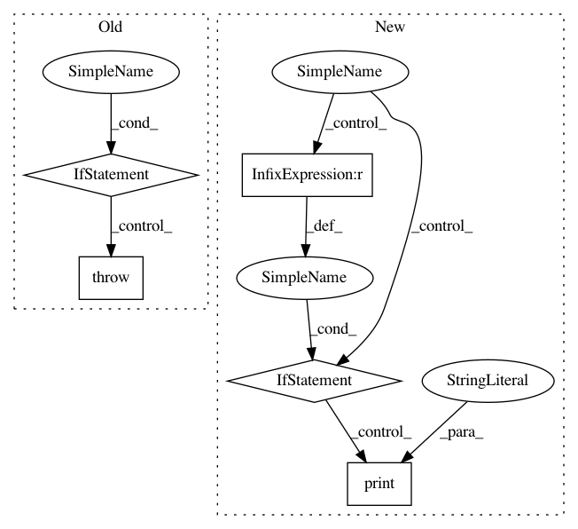

96da2cacf837a9b84ecdeafb50dfb4a93b402f33,deeplabcut/pose_estimation_tensorflow/nnet/net_factory.py,,pose_net,#Any#,12
Before Change
net_type = cfg.net_type
if "mobilenet" in net_type: // multi currently not supported
print("Initializing MobileNet")
if cfg.dataset_type == "multi-animal-imgaug":
raise Exception(
"MobileNets are currently not yet supported for multianimal DLC!"
)
from deeplabcut.pose_estimation_tensorflow.nnet.pose_net_mobilenet import (
PoseNet,
)
After Change
cls = PoseNet
elif "efficientnet" in net_type:
if (
cfg.get("stride", 8) < 8
): // this supports multianimal (with PAFs) or pairwise prediction
from deeplabcut.pose_estimation_tensorflow.nnet.pose_netmulti import PoseNet
cls = PoseNet
else:
print("Initializing Efficientnet")
from deeplabcut.pose_estimation_tensorflow.nnet.pose_net_efficientnet import PoseNet
cls = PoseNet
else:
raise Exception("Unsupported class of network: "{}"".format(net_type))
return cls(cfg)
In pattern: SUPERPATTERN
Frequency: 3
Non-data size: 5
Instances
Project Name: AlexEMG/DeepLabCut
Commit Name: 96da2cacf837a9b84ecdeafb50dfb4a93b402f33
Time: 2021-01-06
Author: tr.biasi@gmail.com
File Name: deeplabcut/pose_estimation_tensorflow/nnet/net_factory.py
Class Name:
Method Name: pose_net
Project Name: streamlit/streamlit
Commit Name: 4e1a728f3a7af1f1db1b8265f208cc34880bf17e
Time: 2018-05-18
Author: armando@playground.global
File Name: lib/streamlit/Proxy.py
Class Name: Proxy
Method Name: _client_ws_handler
Project Name: streamlit/streamlit
Commit Name: d6b3aa9668d0211b8439fa8057b5295c1ab11f23
Time: 2018-05-21
Author: armando@playground.global
File Name: lib/streamlit/Proxy.py
Class Name: Proxy
Method Name: _client_ws_handler